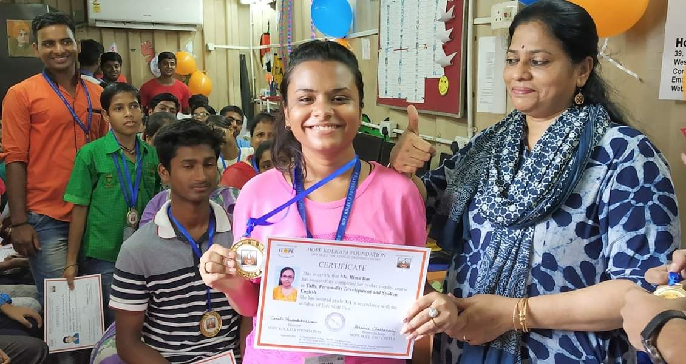

VAROSHA
Chetla Skills Center

From April 2017, with our partner Hope, we fully funded the operating expenses of the Skills Unit in Chetla. The project provides high quality vocational training in spoken English, computer skills, and financial accounting classes using Tally ERP-9.
This year, 2019, 52 trainees from Hope Skill Unit received their certification and medals. Trophies were given to the 3 best performers in Basic Computer, English and Tally Financial course. Varosha is proud to financially support this center and help the students with job placement once they are trained.
This year, 2019, 52 trainees from Hope Skill Unit received their certification and medals. Trophies were given to the 3 best performers in Basic Computer, English and Tally Financial course. Varosha is proud to financially support this center and help the students with job placement once they are trained.